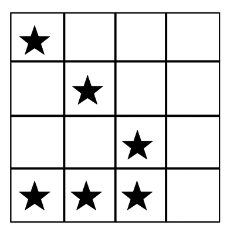
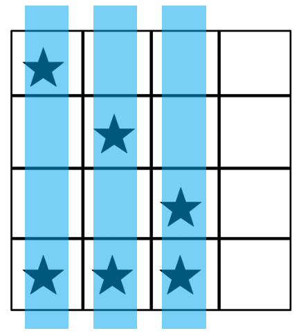
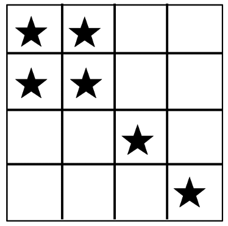

作り損ねた惑星問題（2020年 Week3）#
惑星パズルは、有名なパズルで、以下のようなものです：
惑星は、格子の上に置かれています。
垂直または水平にレーザービームを発射して、全ての惑星を破壊することが目的です。
決められたレーザービーム数より少ない数ですべての惑星を破壊する方法を見つけてください。
以下の図は惑星パズルのマップ例です。
この例では、マップサイズは\(4 \times 4\)です。惑星の数は6です。

例では、マップサイズは4x4で、星の数は6です。
3本のビームを発射することが許されている場合、惑星全てを破壊する唯一の方法は以下の絵のようです。太い水色の線がレーザービームを表しています。例では、3つのレーザーを垂直に打つことで、全ての惑星を破壊できます。

作り損ねた惑星問題もあります。この惑題は、全ての惑星を特定のビーム数より少ない数で破壊する方法がありません。以下の例は、3レーザービームによる「作り損ねた惑星問題」です。

最終問題
Dr. リョウコがクリアしなければいけない16個の領域（問題）には「惑星パズル」の惑星に相当する6つのノイズクラスターが存在していますが、3つのレーザーショットではクリアできない領域（ボード）が一つだけあります。Week 1と2で学んだグローバーのアルゴリズムを使って、その1つの領域（ボード）を特定してください。
問題構成は、リストのタプルで表現されます。各タプルは、[行インデックス、列インデックス]の形式で惑星（ノイズクラスター）の座標を表します。 各タプルは惑星（ノイズクラスター）の座標を表しています。タプルの1つ目の数字は、行のインデックスで、2個目の数字は列のインデックスです。下に示した図の問題構成は以下のように表されます：
[['0', '0'], ['1', '1'], ['2', '2'], ['3', '0'], ['3', '1'], ['3', '2']]
16個の問題構成は以下のようになっています。 Groverのアルゴリズムを使って3発のレーザーショットではクリアできない領域（ボード）を見つけてください！
問題を解くための量子回路を作成してください。提出する量子回路では、答えとなる**solution(4bit)のみを観測してください。**
提出形式は、problem_setを引数とし、QuantumCircuitを返す関数です（関数名は任意のものを付けて問題ありません）。異なる入力(problem_set)でも問題が解ける関数にしてください。異なる入力で検証を行います。
少ないコストで正解を得る回路を作ってください。コストは少ないほど良いです。
problem_set = \
[[['0', '2'], ['1', '0'], ['1', '2'], ['1', '3'], ['2', '0'], ['3', '3']],
[['0', '0'], ['0', '1'], ['1', '2'], ['2', '2'], ['3', '0'], ['3', '3']],
[['0', '0'], ['1', '1'], ['1', '3'], ['2', '0'], ['3', '2'], ['3', '3']],
[['0', '0'], ['0', '1'], ['1', '1'], ['1', '3'], ['3', '2'], ['3', '3']],
[['0', '2'], ['1', '0'], ['1', '3'], ['2', '0'], ['3', '2'], ['3', '3']],
[['1', '1'], ['1', '2'], ['2', '0'], ['2', '1'], ['3', '1'], ['3', '3']],
[['0', '2'], ['0', '3'], ['1', '2'], ['2', '0'], ['2', '1'], ['3', '3']],
[['0', '0'], ['0', '3'], ['1', '2'], ['2', '2'], ['2', '3'], ['3', '0']],
[['0', '3'], ['1', '1'], ['1', '2'], ['2', '0'], ['2', '1'], ['3', '3']],
[['0', '0'], ['0', '1'], ['1', '3'], ['2', '1'], ['2', '3'], ['3', '0']],
[['0', '1'], ['0', '3'], ['1', '2'], ['1', '3'], ['2', '0'], ['3', '2']],
[['0', '0'], ['1', '3'], ['2', '0'], ['2', '1'], ['2', '3'], ['3', '1']],
[['0', '1'], ['0', '2'], ['1', '0'], ['1', '2'], ['2', '2'], ['2', '3']],
[['0', '3'], ['1', '0'], ['1', '3'], ['2', '1'], ['2', '2'], ['3', '0']],
[['0', '2'], ['0', '3'], ['1', '2'], ['2', '3'], ['3', '0'], ['3', '1']],
[['0', '1'], ['1', '0'], ['1', '2'], ['2', '2'], ['3', '0'], ['3', '1']]]
Caution
問題を解く際の注意点
量子回路は 28 qubits以内で実装してください。
Groverのアルゴリズムの反復回数は、1回にしてください。
Groverのアルゴリズムで用いる初期状態はすべての確率が等しい一様分布にしてください。例えば、2量子ビットで通常の4つの計算基底の代わりに3つの計算基底のみを使いたい場合、このような初期状態になります\(\sqrt\frac{1}{3} (|00\rangle + |01\rangle + |11\rangle)\)。
Week2の解説で用いられているものと同じエンディアンで解答してください。（つまり、古典レジスター*
c[0:4]* に問題のindexをマップする際、c[0]が最高位ビットでc[3]が最下位ビットです。例えば、12をマップする時、1100の一番左のビットはc[0]にマップされます。）答えが分からない状態で、オラクルを作成してください。(例：答えを得るために古典最適化ソルバーを使ってオラクルを作ってはいけません。)
コストを計算するための量子回路の分解にはUnrollerを使ってください。回路を簡略化するために、Transpiler passを使ったり、独自のTranspilerを作ってはいけません。
最終スコアはQuantumCircuitの量子コストで定まります。低いコストほど良いスコアです。
def week3_ans_func(problem_set):
##### ここに量子回路を作成してください。
##### 尚、異なる入力(problem_set)でも問題が解ける関数にしてください。異なる入力で検証を行います。
#### 反復回数1回のGroverのアルゴリズムは下記のように一つのoracleとdiffusionで構成されます。
#### for i in range(1):
#### oracle()
#### diffusion()
return qc
# 提出用コード
from qc_grader import grade_ex3, prepare_ex3, submit_ex3
# 以下のprepare_ex3()関数で回路を実行してください。
# prepare_ex3()関数はQuantumCircuitのみを引数として、execute()関数のように働きます。
job = prepare_ex3(week3_ans_func)
result = job.result()
counts = result.get_counts()
original_problem_set_counts = counts[0]
original_problem_set_counts
# 最も観測回数が多いビット列が解として扱われます。